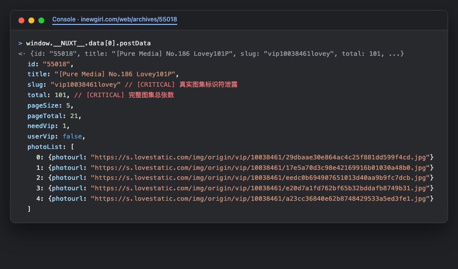

01
第一讲：暗度陈仓 · Nuxt SSR 数据注水泄露
生活与影视隐喻
精致便当盒底部的秘密进货单
在电影《盗梦空间》中，设计图纸的泄露往往来自最不起眼的草稿边缘。
想象一家高端餐厅给你端上了一份精致的便当盒（HTML 渲染页面）。
表面上，主厨只在盒子里摆放了 3 样小吃（前端页面限制只显示 3 张预览图），并在盖子上写着“普通顾客仅限品尝 3 样”。
然而，当你翻转整个便当盒底座时，却发现主厨为了让前台服务员快速对账，用透明胶带把整整 101 道顶级主菜的名称、仓库抽屉编号和保鲜密码完整地贴在盒底（window.__NUXT__）——只要低头看一眼，秘密早已昭然若揭。
技术原理：Nuxt.js 服务端渲染与客户端 Hydration
Nuxt.js 与 Next.js 等现代化同构框架为了兼顾 SEO 搜索引擎优化 与 SPA 单页交互性能，采用了服务端注水（Hydration）架构：
- 服务端获取（asyncData）：在 Node.js 服务端执行异步请求，从数据库拉取完整的帖子详情对象
postData。 - 状态序列化：服务端将该 JavaScript 状态对象序列化为 JSON 字符串，直接注入到 HTML 文档的
<script>window.__NUXT__ = (function(...){...})</script>标签内。 - 客户端接管（Hydration）：浏览器加载页面后，Vue 运行时直接从全局变量中提取数据重建虚拟 DOM，避免重复发起 API 请求。
漏洞本质：开发者在编写模板时，即便在组件内使用了 v-if="isVip" 隐藏了后面的图片，但由于传递给整个页面的 data 没有在服务端做字段清洗（Data Sanitization），导致完整的帖子元数据（如真实总量 total: 101、图集唯一别名 slug: "vip10038461lovey"、前 5 张大图直链）全部明文暴露在网页源代码中。
图 1.1：便当盒底部露出的秘传菜单纸卷 —— SSR 服务端数据注水残留
现场实测截图 1：Chrome DevTools 控制台提取 window.__NUXT__

HTML 源码中提取的真实 __NUXT__ 数据
<!-- 泄露位置：HTML 源码底部的 window.__NUXT__ -->
window.__NUXT__ = (function(...) {
return {
data: [{
postData: {
id: "55018",
title: "[Pure Media] No.186 Lovey 101P",
slug: "vip10038461lovey", // 关键：真实图集标识符
needVip: 1,
total: 101, // 关键：告知总数 101 张
pageSize: 5,
photoList: [
// 第一页 5 张高清大图直链已被服务端预注入
{ photourl: "https://s.lovestatic.com/img/origin/vip/10038461/29dbaae3...jpg" },
{ photourl: "https://s.lovestatic.com/img/origin/vip/10038461/17e5a70d...jpg" }
]
}
}]
};
})(...);